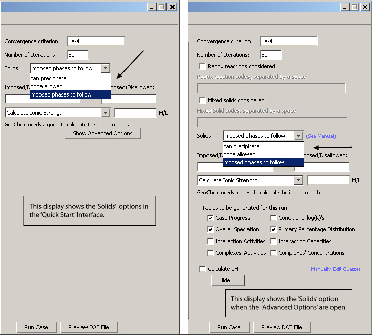

Solids-
Mixed Solids-

The user has the option of having no solids considered (None Allowed), precipitation (Can Precipitate), or allowing or disallowing specific simple solid phases (Imposed Phases to follow). The last option requires that the user enters specific codes to indicate what will be allowed or disallowed. Please see the Imposed / Disallowed Phases Help file for more on this topic.
Geochem can calculate for each metal-ligand pair, up to six soluble complexes and up to three different simple solid phases (complexes and solids which contain no more than one component metal, one component ligand, and H+ or OH- ions).
A solid phase may be imposed for the first iteration only. If it is found to be unstable, it will be dissolved anyway. This option is useful mainly when the user knows for sure that some solid is and will be present and will participate actively in equilibria with solution. The option is unlikely to be useful in most plant culture work, even if an added solid is present (e.g., CaCO3), because the program would form it anyway. It is more helpful in geological systems with relatively large amounts of one or more solids known to be present.
On the other hand, disallowing all solids means that no solid phase will be allowed to precipitate during the calculation and this can be a useful option in nutrient culture work, where solutions are often dilute and are changed frequently.
 See the Help file : "Example 1 General Case.geo" for an example of the "can precipitate" option. In this example, both complex and simple solid phase formation are considered.
See the Help file : "Example 1 General Case.geo" for an example of the "can precipitate" option. In this example, both complex and simple solid phase formation are considered.
 See the Help file: "Example 2 Imposed Phases.geo" for an example of the "imposed phases to follow" option.
See the Help file: "Example 2 Imposed Phases.geo" for an example of the "imposed phases to follow" option.

Excerpted from the Geochem-PC version 2.0 user notes:
GEOCHEM can perform computations for 'mixed solids', i.e., solid phases that contain more than one metal, one ligand, and either H or OH. During a single program run it can simultaneously consider up to 20 metals and 30 ligands. For each metal-ligand pair, up to six soluble complexes and up to three different simple solid phases (complexes and solids which contain no more than one component metal, one component ligand, and H+ or OH- ions) can be considered. The thermodynamic database allows for up to 50 individual metals and 99 different ligands.

See: Metal / ligand database for M and L codes shown above.
The conventions followed by GEOCHEM are best taken from the example reactions in the table below. Each complex or simple solid formed by a metal and a ligand is designated by three stoichiometric coefficients (e.g., 13 0 or 11-1); the first is the number of metal ions, the second is the number of ligands, and the third is the number of protons consumed (if positive) or released (if negative) in the formation reaction. The table shows that GEOCHEM 'thinks' in terms of formation reactions, i.e. association reactions for complexes and precipitation reactions for solids. All acid-base reactions are handled via proton exchange, and reactions that could be written as consuming OH-'s must be written instead as hydrolysis reactions releasing H+. All reactions must be expressed using the log K values for overall, not stepwise, reactions. Lastly, note that the program is indifferent to characteristics of solid phases other than reaction stoichiometry and solubility (see, e.g., the three Fe oxides/hydroxides given at the end of the table).